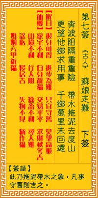

观音灵签第七签 【苏娘走难】 |
 | |||
奔波役役重重险 带水拖泥又渡山 更虑他方求别用 千山万水未能还 |
||||
| 【吉凶】 | 下下签 | 【宫位】 | 丑宫 | |
| 【签语】 | 此卦拖泥带水之象，凡事守旧则吉也。 | |||
| 【解曰】 | 退身可得 进步为难 只宜守旧 莫望高板 | |||
| 【仙机】 | 此签家宅不利，求财秋冬吉，交易平平，婚姻六甲祈福，行人阻，蚕畜不利，寻人难，讼亏，移居吉，失物不见，病作福，山坟不利。 | |||
| 【详解】 | 路途危险又波折，拖泥带水还得攀越重重山头;虽然想要找出其它更好的办法来走，只可惜最终恐怕无法回头。 退身可得，进步难为，只宜守田，切莫高扳。此签渡水拖泥之象，凡事正直则吉。 奔波役役重重险。带水拖泥又渡山之运途也。凡事必须谨慎。准备酌理。探取根源。明其是非者。审一己之进退。方向者。心存恶者得祸。存直者即可为获福矣。 祸福者皆由人作之。退身可得进步难为。只宜守田切莫高扳。 此签有”一念之差”之意。奉劝当事人，三思而行。一般人常对现状有所不满，或羡慕别人的际遇或地位环境，认为样样都比自己好，因此汲汲向外寻求，期望藉 此获得另一片发展。人应珍惜现有的环境与资源，知福、惜福。谨记在做任何决定之前，务必慎重思量、仔细评估本身与环境的优弱势，找出最适合自己的定位与 方向。切忌一时冲动负气出走，结果恐不如预期，既无法适应发挥所长，又藕断丝连、怀念原先熟悉的事物，将陷入进退两难、后悔莫及之境。 | |||
| 【典故】 | 苏娘是指苏英娘娘。周朝景王（公元前544——520）时，西番国王进贡了三件宝物：温凉盏、醒酒毡、能言鸟（会说话的鹦鹉），皇帝非常高兴，问谁人能逗鸟说话，结果没有人能够，只有东宫皇后苏英娘娘能逗鹦鹉说话，即刻获得皇帝赞赏，西宫皇后梅玉春十分嫉妒，怀恨在心，诬陷苏英入死罪，兴得忠臣潘葛以自己的妻子代替苏英死刑，苏英漏夜出走，逃亡中到了白马寺，生下了太子。弹词宝卷书曰：《苏英皇后鹦鹉记》 | |||